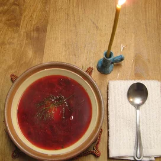

Ukrainian Borscht

Description
This soup is a must for those who enjoy a beet/vegetable soup. It takes about 1 hour to prepare and cook but it is well worth the time. I have found that cooking the various ingredients separately enhances the flavor of the borscht and it does not get mushy. However, you may also cook all ingredients together in the order as listed if you are pressed for time.
Ingredients
- 6 cups water
- 1 cup white kidney beans
- 4 medium beets, peeled and shredded
- 6 cups water
- 4 large carrots, shredded
- 3 cups water
- 3 potatoes, peeled not diced
- 2 cups water
- 2 stalks celery, chopped
- 2 onions, chopped
- 1 green bell pepper, chopped
- 1 red bell pepper chopped
- 4 cloves garlic minced
- 4 cups water
- 2 tbsp chicken bouillon powder
- 4 cups chciken broth
- 1/2 cup dry potato flakes
- 1 tsp ground black pepper
- 2 tbsp soy sauce
- 4 tbsp chopped fresh dill weed
- 3 tbsp white sugar
- 3 tbsp distilled white vinegar
Steps
- In a pot, add 6 cups of the water and pinto beans and simmer for about 1 hour or until beans start to split. Make sure the beans are covered with water at all times during simmering. Save water along with the beans to add to borscht later.
- Peel and shred red beets, then place in a large cooking pot and add 6 cups of the water. Boil beets until just tender, but do not overcook. Save water along with beets to combine later with the remaining ingredients.
- Peel and shred carrots, then place in separate pot along with 3 cups of the water. Boil until tender, but do not overcook. Save water along with carrots to add later to borscht.
- In a separate pot, add potatoes and 2 cups of the water and cook until tender. Mash potatoes in their own liquid and set aside to add to borscht later.
- In a separate pot, add chopped celery, chopped onions, diced green and red peppers, chopped garlic, 4 cups water and chicken soup base and simmer until vegetables are just tender. When tender, transfer to the cooking pot with beets.
- Add cooked beans, carrots and mashed potatoes to cooking pot. Now add vegetable broth, mix well and bring to boil. Add instant potato flakes, black pepper, soy sauce, dill weed, sugar, vinegar and cook for another 5 minutes. If borscht appears too thick, add additional water and cook for 2 minutes longer. Adjust seasonings to taste. If desired, garnish each serving with a dollop of sour cream.